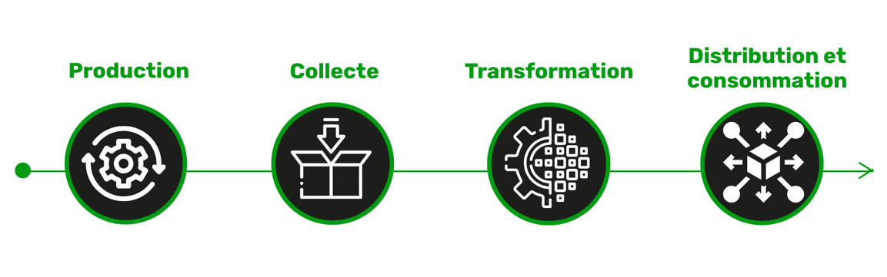

Présentation
La filière laitière en Tunisie joue un rôle crucial dans l'économie nationale et dans la sécurité alimentaire du pays. Elle représente l'un des secteurs agro-industriels les plus importants.
Elle couvre un ensemble de maillons allant de la production à la Distribution et consommation
Les différents maillons de la filière

Production
En Tunisie l'élevage bovin représente une composante importante dans la production agricole et dans l'économie nationale. Il a été classé parmi les secteurs prioritaires du fait qu'il génère deux produits stratégiques (lait et viande).

Collecte

L'activité de la collecte du lait constitue le deuxième maillon de la filière laitière. Il permet la valorisation de la production laitière en plus de son effet d'entraînement sur le développement du secteur. En 2022, près de 234 centres de collecte sont en activité (234 centres de collecte ont obtenu l'agriment sanitaire vétérinaire) avec une capacité globale de collecte dépassant les 2,9 millions de litres de lait par jour. Le lait collecté représente plus de 60.9 % du lait produit et les centrales laitières s'approvisionnent à hauteur de 84.5% du lait frais au près des centres de collecte.
Transformation
Ce maillon comporte plus de 45 unités industrielles d'une capacité de transformation de 5,6 millions de litres par jours ainsi que d'un réseau de transformateurs artisanaux repartis sur toute la République.

Distribution et consommation
Les circuits de distribution et de commercialisation du lait qui concerne les produits artisanaux sont mal connus et non identifiés. La consommation du lait et des produits laitiers a évolué suite aux changements des habitudes alimentaires, à l'amélioration du pouvoir d'achat et au développement de la production, elle est de l'ordre de 109,9 l/habitant Source INS 2017.